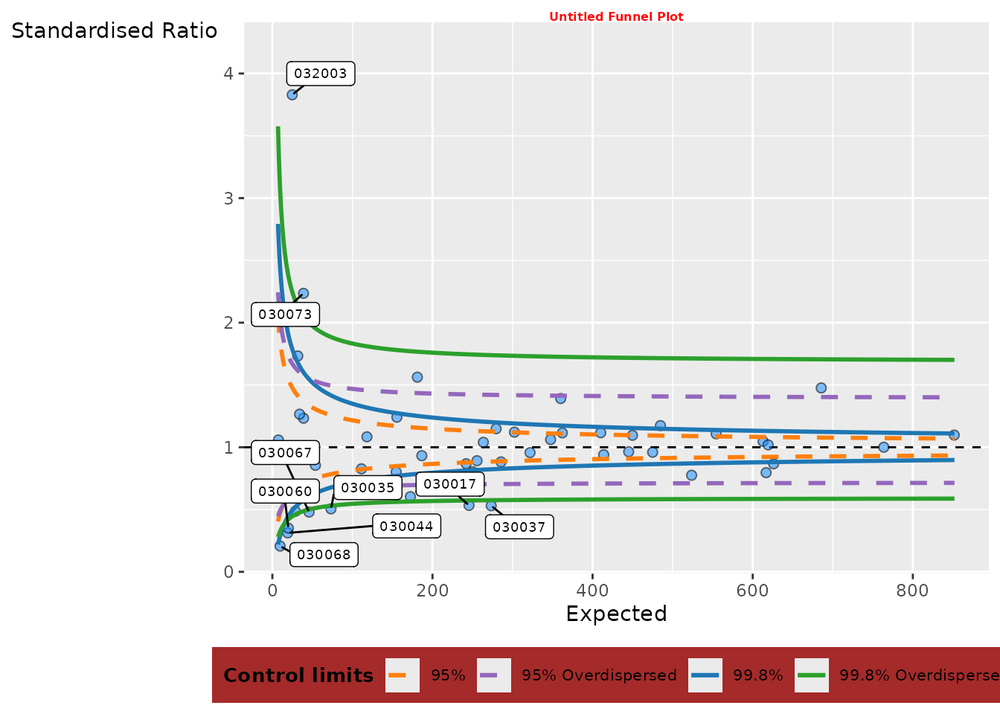
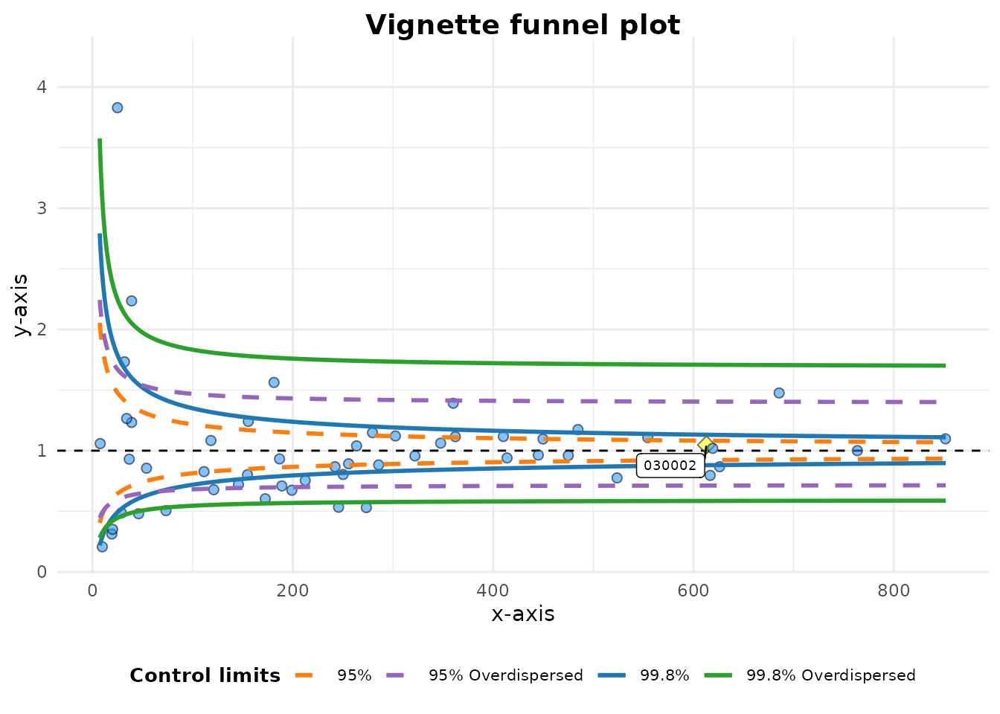

Changing funnel plot options
Source:vignettes/changing_funnel_plot_options.Rmd
changing_funnel_plot_options.RmdSetup
This brief vignette shows how to go about changing some of the
parameters available in the FunnelPlotR package. Firstly,
lets set up some data, the same as the README and other vignette:
library(COUNT)
#> Loading required package: msme
#> Loading required package: MASS
#> Loading required package: lattice
#> Loading required package: sandwich
data(medpar)
medpar$provnum <- factor(medpar$provnum)
medpar$los <- as.numeric(medpar$los)
# Logistic model to predict LOS, LOS is quite overdispersed
mod <- glm(los ~ hmo + died + age80 + factor(type)
, family = "poisson"
, data = medpar)
#Get predicted value for ratio
medpar$prds <- predict(mod, newdata = medpar, type = "response")
# Draw plot, returning just the plot object
funnel_plot(medpar, denominator = prds, numerator = los
, group = provnum
, limit = 99
, label = "outlier"
, draw_unadjusted = TRUE)#> A funnel plot object with 54 points of which 9 are outliers.
#> Plot is adjusted for overdispersion.Highlighting a data point
You can pick out data point(s) using the highlight
option. Here we we use the example above to highlight the hospital
labels ‘030002’ in the data set.
# Draw plot, returning just the plot object
funnel_plot(medpar, denominator = prds, numerator = los
, group = provnum, limit = 99, label = "outlier"
, draw_unadjusted = TRUE, highlight = "030002")#> A funnel plot object with 54 points of which 9 are outliers.
#> Plot is adjusted for overdispersion.Themes
You can alter themes in the FunnelPlotR packages by
using the theme argument. There are a couple of options included with
the package funnel_clean (the default) and
funnel_grey, but you can write your own theme using any
valid ggplot2 theme and pass it to the plot.
funnel_plot(medpar, denominator = prds, numerator = los
, group = provnum, limit = 99, label = "outlier"
, draw_unadjusted = TRUE, theme = funnel_grey())
#> A funnel plot object with 54 points of which 9 are outliers.
#> Plot is adjusted for overdispersion.If you are not familiar with themes, you can create a theme with the
theme function from ggplot2. I will create a
new theme, including the funnel_grey theme, but with some
different (exaggerated) elements.
library(ggplot2)
new_funnel_theme <-
funnel_grey() +
# Change plot title
theme(plot.title = element_text(face = "bold", colour = "red", size = 6),
# Alter legend background colour
legend.background = element_rect(fill = "brown"),
#Rotate y axis label
axis.title.y = element_text(angle = 0))
funnel_plot(medpar, denominator = prds, numerator = los
, group = provnum, limit = 99, label = "outlier"
, draw_unadjusted = TRUE, theme = new_funnel_theme)
#> A funnel plot object with 54 points of which 9 are outliers.
#> Plot is adjusted for overdispersion.Plot colours
You can change the colours of the limits. I am aiming to allow better
colour theme support in future versions, but at present they are
supplied as a vector of four hex colours to the plot_cols
argument, in the order 95% Poisson, 99.8% Poisson, 95% OD and 99.8% OD.
At present all four values are required, whether you are plotting all
four limits or not. I have deliberately avoided using red and green
colours as defaults because it encourages value judgements about ‘good’
v.s. ‘bad’ which may be unreasonable for a given data set. Default
colours are paired for both low and high:
c("#FF7F0EFF", "#1F77B4FF", "#9467BDFF", "#2CA02CFF")
Here I will change the 95% limit to black (“#000000”):
funnel_plot(medpar, denominator = prds, numerator = los
, group = provnum, limit = 99, label = "outlier"
, draw_unadjusted = TRUE, theme = funnel_grey(),
plot_cols = c("#000000", "#1F77B4FF", "#9467BDFF", "#2CA02CFF"))#> A funnel plot object with 54 points of which 9 are outliers.
#> Plot is adjusted for overdispersion.Changing scales
FunnelPlotR automatically sets it’s scales from the data
you present to it but, on occasions, the scale rules might fall down for
a particular dataset, or you may want to fix the plot to a particular
scale. You can do this using the xrange and
yrange arguments. Each takes a vector of two values, the
minimum and the maximum:
## Changing labels
funnel_plot(medpar, denominator = prds, numerator = los
, group = provnum, limit = 99, label = "outlier"
, draw_unadjusted = TRUE, x_range = c(0, 400), y_range = c(0, 2))
#> Warning: Removed 17 rows containing missing values or values outside the scale range
#> (`geom_point()`).#> A funnel plot object with 54 points of which 9 are outliers.
#> Plot is adjusted for overdispersion.ggplot2 will warn you, as above, if you are excluding
any points from your plot.
Changing labels
You can change the plot labels and axis labels easily using the
options: title, x_label and
y_label.
funnel_plot(medpar, denominator = prds, numerator = los
, group = provnum, limit = 99, label = "outlier"
, draw_unadjusted = TRUE, title = "Vignette funnel plot"
, x_label = "x-axis", y_label = "y-axis")#> A funnel plot object with 54 points of which 9 are outliers.
#> Plot is adjusted for overdispersion.There are different labelling options for the data points too, using
the label option. The default is to label outliers, but you
can turn labels off, label the highlighted points, or both the
highlighted points and the outliers (‘both’)
funnel_plot(medpar, denominator = prds, numerator = los
, group = provnum, limit = 99
, draw_unadjusted = TRUE, title = "Vignette funnel plot"
, x_label = "x-axis", y_label = "y-axis"
, highlight = "030002", label = "highlight")
#> A funnel plot object with 54 points of which 9 are outliers.
#> Plot is adjusted for overdispersion.Cutting out the ggplot object
Since FunnelPlotR uses ggplot2, you could
always extract the plot and alter it manually like any other
ggplot2 object. The easiest way is to extract it with
plot(). Below we’ll add a (completely useless) vertical
line to demonstrate adding more elements:
# Original funnel plot object
fp <-
funnel_plot(medpar, denominator = prds, numerator = los
, group = provnum, limit = 99, label = "outlier"
, draw_unadjusted = TRUE)
# Extract just the plot
my_plot <- plot(fp)
# Add an additional geom to plot
my_plot +
geom_vline(aes(xintercept = 400), linetype = "dashed"
, colour = "red", linewidth = 2)